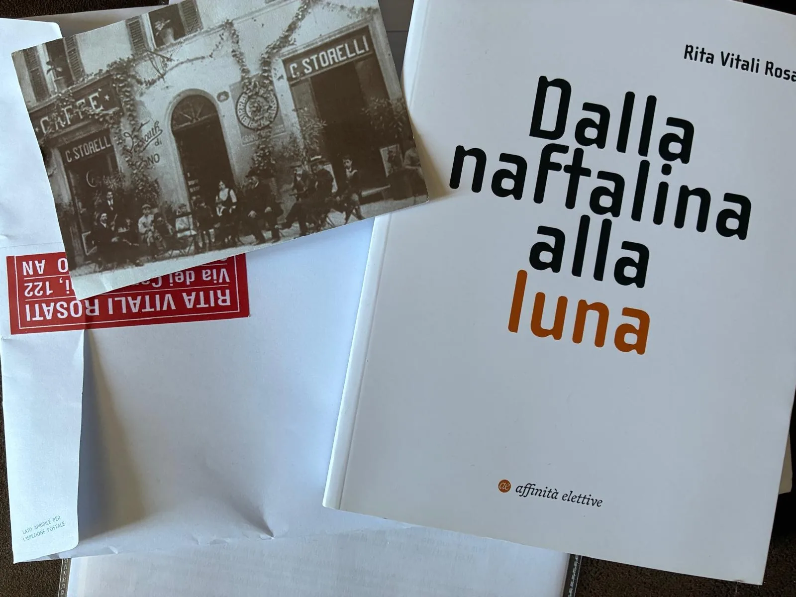

Corso della Repubblica, un giovedì pomeriggio.
Potrebbe essere il corso di molte città italiane o europee: un asse antico, una piazza vicina, un palazzo comunale con dentro ancora l’eco delle parti guelfe e ghibelline, una fontana che continua a gettare acqua come simbolo elementare di benessere, pace, continuità. Luoghi costruiti quando una città non era soltanto uno spazio da attraversare, ma una forma comune da abitare.
All’antico Caffè Storelli la città sembrava declinarsi in un locale, come se per qualche metro si fosse raccolta dentro uno scrigno. Tavoli stretti, odore di caffè, legno, carta, voci basse. Non un museo, non una scenografia, non una nostalgia apparecchiata: un luogo ancora vivo, dove la storia non si espone, ma tiene insieme le cose.
Ci eravamo incontrati lì, dopo anni di rinvii, per parlare di arte, libri, memoria, luoghi. Un’artista mi consegnava il suo ultimo lavoro, un articolo di giornale, una busta firmata. Oggetti fisici, portati a mano. Carta, inchiostro, presenza. In un tempo in cui quasi tutto scorre da uno schermo all’altro senza peso, quel dono aveva la solidità delle cose che chiedono custodia.
Intorno, pochi tavoli occupati. Persone diverse, conversazioni separate, una piccola città concentrata in gesti minimi. Poi le parole hanno cominciato a toccarsi. Una battuta, un ricordo, un’opinione.
Due tavoli separati sono diventati, per qualche minuto, un tavolo solo.
Prima di uscire, il titolare mi ha regalato una cartolina storica del suo caffè. Me ne aveva già donata una, forse due. Non gliel’ho detto. Alcuni gesti non si correggono: si ricevono. Per rispetto dell’età, del mestiere, della tenacia con cui certe persone custodiscono luoghi che altri attraversano soltanto.
Poi sono uscito a fare una vasca lungo il corso.
Ho incontrato un amico tornato dall’estero. Abbiamo camminato avanti e indietro come si faceva una volta, quando il corso era una forma elementare di socializzazione e non solo uno spazio urbano da riempire nei giorni comandati. Alla quarta vasca, alcune titolari dei negozi sono uscite sulla soglia. Ci salutavano felici, compiacenti: due persone che passeggiavano, parlavano, occupavano il centro con naturalezza, come se per un momento fosse tornato qualcosa.
Alle sette di sera, il corso sembrava tutto nostro.
Era bello. Ed era anche il problema.
Una città si capisce anche da questi segni minimi: un caffè che resiste, una fontana che continua a zampillare, una cartolina donata, un tavolo che si allarga, due persone che fanno le vasche e diventano quasi un evento.
Le periferie del potere cominciano qui: nel punto in cui ciò che teneva insieme una comunità esiste ancora, però appare a intermittenza.
Vivo, fragile, esposto.
Una periferia del potere è un luogo in cui decisioni prese altrove diventano vita concreta.
Il centro vede quando è già tardi
Il centro vede tardi, è oltreoceano.
Vede quando una crisi è diventata statistica, aggrega Città, Regioni, Stati.
Il centro ha bisogno di indicatori, rapporti, emergenze, tavoli tecnici, mappe, previsioni. La periferia, invece, spesso non prevede: sente.
Sente prima perché vive meno protetta dalle narrazioni ufficiali. Abita il luogo in cui le decisioni arrivano come conseguenza: un autobus che manca, una scuola che perde iscritti, un negozio che chiude, una fabbrica che cambia proprietà, un figlio che parte, una lingua pubblica che fatica a nominare la vita reale.
Il centro chiama tutto questo transizione, ristrutturazione, innovazione, riallineamento, trasformazione.
La periferia lo incontra sotto forma di biografie.
Sono i luoghi dove il futuro mostra prima il suo costo.

La periferia è distanza. È esposizione
Siamo abituati a pensare la periferia come lontananza: dal centro, dalla capitale, dalle grandi città, dalle università più visibili, dai flussi finanziari, dai media, dalle infrastrutture, dai luoghi dove si decide ciò che poi tutti dovranno chiamare realtà.
La periferia è distanza ed esposizione insieme.
Esposti sono i territori che dipendono da decisioni industriali prese altrove. Esposte sono le città che hanno costruito la propria identità intorno al lavoro e poi hanno visto il lavoro spostarsi, frammentarsi, perdere promessa. Esposte sono le comunità che non controllano i linguaggi con cui vengono raccontate. Esposte sono le aree interne che diventano interessanti solo quando servono da cornice, da riserva turistica, da archivio sentimentale o da problema demografico.
Esposti sono anche gli uomini che abitano questi luoghi e sentono, magari senza dirlo, che il proprio spazio non è più interpretato da chi lo governa.
Il potere smette di essere teoria.
Diventa orario, distanza, costo, silenzio, ritorno mancato, vetrina spenta, casa ereditata, competenza non trasmessa, azienda fragile, scuola che resiste, associazione che tiene, bar che continua ad aprire.
Il centro produce linguaggio, decisioni, immagini, sistemi globali.
La periferia riceve conseguenze, ritardi, dipendenze, promesse mancate.
Perché esposta, vive meno riparata dalle parole del centro e vede prima.
I segni minimi del futuro
Ogni epoca lascia segni grandiosi, facili da riconoscere: guerre, crisi finanziarie, rivoluzioni tecnologiche, migrazioni, nuove potenze, crolli industriali. Altri segni restano quasi invisibili: un corso che si svuota, una conversazione che diventa rara, un dono cartaceo che improvvisamente sembra più solido di mille messaggi digitali, due persone che camminano e attirano sguardi perché stanno facendo una cosa un tempo normale.
Le periferie del potere si leggono da questi segni, perché il piccolo, osservato con attenzione, mostra il punto in cui il grande entra nella vita quotidiana.
La globalizzazione prende il volto di una famiglia che ha visto partire qualcuno perché il lavoro qualificato stava altrove. La centralizzazione dei processi amministrativi diventa una città che perde funzioni, uffici, passaggi, possibilità. La crisi della comunità prende corpo in una piazza che resta bella senza essere più necessaria.
Molte cose sono ancora vive, senza fare sistema: persone, luoghi, memorie, gesti, competenze, forme di cura, tracce di eleganza civile; bar che custodiscono, negozianti che osservano, artisti che consegnano libri a mano, amici che tornano, anziani che tengono aperto, giovani che vorrebbero cambiare il modo di lavorare, associazioni che raccolgono presenza.
Tutto appare intermittente.
Una comunità intermittente esiste ancora e resta sospesa davanti alla domanda più dura: riuscirà a diventare futuro?
La comunità è responsabilità
Serve severità.
La comunità va sottratta alla retorica. La parola “territorio” non fa vivere un territorio. Le radici danno frutto solo quando trovano lavoro, cura, intelligenza, istituzioni, impresa, cultura. Opporre il locale al globale, il piccolo al grande, l’autentico all’artificiale produce consolazione più che futuro.
Una comunità può chiudersi: paura, rancore, difesa del poco che resta. Può trasformare la memoria in museo e il dolore in identità, o passare anni a raccontare ciò che era, evitando la domanda più dura: che cosa può ancora diventare?
La comunità che serve oggi è una forma di responsabilità.
È il luogo in cui le persone tornano a riconoscere ciò che subiscono e a dargli un nome, ed è il punto in cui la complessità smette di restare parola astratta e chiede decisioni: scuola, lavoro, impresa, cura, cultura, giovani, anziani, spazi, energia, competenze, memoria.
Una comunità chiusa diventa difesa.
Una comunità aperta può diventare qualcosa di più difficile: una forma, un modello.
Accoglie il mondo senza lasciarlo attraversare gli uomini come materia passiva, traduce l’urto in linguaggio, la perdita in domanda, la fragilità in organizzazione.
Questo è il compito del micro: trasformare la piccolezza in densità. Una città minore, un territorio interno, un’associazione, un circolo, una rete di persone serie incidono poco, da sole, sul corso degli imperi. Eppure possono impedire che la vita concreta resti senza parole, senza strumenti, senza rappresentazione.
Il micro vale perché è il primo luogo in cui il reale torna leggibile.
Il ritorno è una prova
Ogni territorio ferito prima o poi incontra una domanda: perché tornare?
L’amore per un luogo, da solo, regge poco se intorno mancano lavoro, possibilità, relazioni, futuro. La bellezza, quando resta senza occasioni, diventa cornice per la malinconia. L’appartenenza, se non produce movimento, rischia di trasformarsi in fedeltà a una perdita.
Il ritorno è una domanda politica nel senso più alto.
Che cosa deve esistere perché un giovane possa restare senza sentirsi sconfitto? Che cosa deve esistere perché chi è partito possa tornare senza vivere il ritorno come regressione? Che cosa deve esistere perché una città offra possibilità e non chieda soltanto nostalgia?
Il ritorno misura la forza reale di un territorio.
Un amico che torna dall’estero, due persone che camminano lungo il corso, una conversazione che ricomincia: tutto questo è bello, però chiede una forma. Servono luoghi, lavoro, cultura, occasioni, reti, strumenti, imprese, scuole, linguaggio pubblico, istituzioni leggere, fiducia. Serve una città capace di accogliere il ritorno come possibilità normale, non come eccezione commovente.
Quando questo manca, il ritorno resta un gesto privato.
E i territori si salvano solo quando i gesti privati diventano grammatica comune.
Chi decide quali luoghi appaiono
C’è poi una periferia più profonda, meno visibile.
Non riguarda solo la geografia. Riguarda la luce.
Nel mondo contemporaneo esiste ciò che riesce ad apparire: entra nei flussi, negli schermi, negli algoritmi, nelle narrazioni, nei format, nei linguaggi riconoscibili dal centro. Il resto diventa opaco. Continua a vivere, lavorare, soffrire, creare, custodire; appare tardi, male, oppure soltanto quando diventa problema.
Se il potere decide che cosa viene illuminato, le periferie diventano anche luoghi che il nuovo sole del mondo illumina male.
Un territorio viene visto quando brucia, quando perde abitanti, quando diventa caso, quando produce emergenza, oppure quando offre un’immagine vendibile: borgo, natura, autenticità, lentezza, qualità della vita. Questa è visibilità, ancora lontana dalla comprensione. È consumo dello sguardo.
Capire una periferia significa riconoscere che lì si manifestano prima le fratture destinate a toccare tutti: il lavoro che perde promessa di ascesa, la difficoltà di trasmettere memoria, la socialità ordinaria che si assottiglia, la crisi dei corpi intermedi, la distanza tra lingua pubblica e vita vissuta, la fatica di legare il sé a un luogo senza sentirsi esclusi dal mondo.
Le periferie chiedono di essere lette.
Micro-ordini contro l’urto
La tecnologia conterà sempre di più. L’intelligenza artificiale, le infrastrutture digitali, l’energia, la difesa, i dati e le piattaforme sono già luoghi decisivi del potere.
La domanda riguarda la forma umana, civile e comunitaria capace di abitare quel potere senza esserne soltanto amministrata.
Una civiltà che affida il proprio futuro alla sola potenza tecnologica rischia di smarrire il giudizio; uno Stato che si rafforza soltanto attraverso apparati, piattaforme, sistemi predittivi e capacità militare può finire per chiamare sicurezza ogni forma di bene comune. Un’innovazione pensata solo dai centri, dalle grandi aziende, dagli eserciti, dalle capitali e dagli investitori fatica ad ascoltare i luoghi in cui diventa lavoro che cambia, competenze che invecchiano, giovani che partono, servizi che spariscono, comunità costrette ad adattarsi senza essere consultate.
Senza infrastrutture, una comunità resta fragile. Senza tecnologia, un territorio rischia di diventare museo. Senza sicurezza, anche la libertà diventa esposta. Senza impresa, competenza e organizzazione, la cura dei luoghi si riduce a buona volontà.
Vale anche il contrario: senza comunità, la tecnologia diventa apparato; senza territorio, l’innovazione diventa astrazione; senza memoria, la velocità diventa consumo del presente; senza giudizio, la potenza diventa semplice capacità di esecuzione.
Il futuro chiede una nuova alleanza tra tecnologia e luoghi, impresa e comunità, intelligenza artificiale e intelligenza civile, difesa e cura, infrastrutture e forme di vita. Una società può vincere la competizione tecnologica e perdere, nello stesso movimento, la capacità di sapere per chi e per che cosa sta vincendo.
Qui le periferie del potere tornano decisive.
Costringono la tecnologia a rispondere alla domanda che i centri spesso evitano: che cosa accade quando il futuro smette di essere promessa e diventa conseguenza?
Un algoritmo può ottimizzare un processo. Una piattaforma può distribuire servizi. Una rete può connettere luoghi lontani. Un sistema può ordinare informazioni. La domanda decisiva resta fuori dal calcolo: tutto questo produce una città più viva, un lavoro più degno, una comunità più capace, un giovane meno costretto a partire, un anziano meno solo, una memoria meno decorativa, una libertà più concreta?
Questa è la domanda che le periferie possono porre al secolo tecnologico: una domanda sul fine.
Viviamo in un tempo in cui il macro appare sempre più opaco. Le potenze si riarmano, le economie si riconfigurano, la tecnologia accelera, le democrazie faticano, le élite sembrano spesso più impegnate a conservare posizione che a generare futuro. Tutto appare grande, distante, difficilmente modificabile.
Per questo il micro torna decisivo.
Il micro è il luogo in cui le persone possono ancora conoscersi, parlarsi, contarsi, costruire fiducia, dare nome ai problemi, verificare i fatti, educare lo sguardo, trasmettere memoria, generare responsabilità. Sta dentro il macro, ne subisce pressioni, decisioni, accelerazioni e crisi; per questo può diventare il punto in cui il sistema viene interrogato, corretto, trasformato.
Esistono culture locali, professionali, familiari, industriali, artigiane, civiche, religiose, scolastiche, associative. Forme diverse con cui gli uomini hanno provato a dare ordine alla vita, trasmettere sapere, costruire fiducia, rendere abitabile un luogo.
Quando queste culture vengono ridotte a colore locale, il centro perde intelligenza. Quando entrano in scambio positivo con le infrastrutture più grandi, il micro diventa contributo, correzione, capacità di far risalire dal basso informazioni, criteri, bisogni, limiti, possibilità.
Se il macro tende all’urto, il micro può ancora preparare il concerto.
Un concerto difficile: comunità che smettono di pensarsi come scarti della storia e tornano a diventare cellule di civiltà; territori che producono linguaggio invece di chiedere soltanto attenzione; luoghi che cercano una forma nuova invece di limitarsi a rimpiangere una funzione perduta.
Prima delle soluzioni serve una forma dello sguardo.
Occorre leggere i territori come organismi diversi, con funzioni, vocazioni, ferite e possibilità proprie. Una zona montana chiede risposte diverse da una costa; una città interna vive tempi diversi da una pianura produttiva; una comunità che ha perso funzione industriale richiede una grammatica diversa da un luogo attraversato da flussi turistici o logistici.
Il primo atto politico, prima ancora del programma, è smettere di guardare i territori con mappe morte.
Le periferie del potere sono i luoghi dove la storia si presenta senza trucco: meno protetta dalle grandi parole, meno coperta dalle narrazioni del centro, più esposta al costo reale delle trasformazioni.
Dove il futuro arriva prima, e fa più male.
Per questo la rassegnazione è un lusso che non possiamo permetterci. Anche la nostalgia, più elegante, resta sterile. Il tempo che arriva è troppo complesso, incerto e veloce per essere affrontato da comunità chiuse, territori isolati, intelligenze disperse, persone che si osservano da lontano senza collaborare.
Servono luoghi vigili.
Comunità capaci di restare aperte senza dissolversi, collaborare senza confondersi, custodire memoria senza trasformarla in museo, usare la tecnologia senza consegnarle il giudizio, generare fiducia prima che l’emergenza la renda impossibile.
Vediamo abbastanza per capire che non basteranno la cronaca, l’adattamento, la lamentela, il piccolo orgoglio locale, la delega a chi sta più in alto.
Le periferie del potere possono restare luoghi attraversati dalle conseguenze oppure diventare i primi luoghi della vigilanza civile: spazi in cui una comunità torna a leggere i propri segni, riconoscere le proprie forze, unire ciò che è rimasto separato, preparare collaborazione prima che l’urto la renda necessaria, per restare svegli senza tornare indietro mentre il futuro passa sopra di noi.
Studi
Antonio Gramsci — questione meridionale, egemonia, rapporto tra centro politico, classi dirigenti e territori subalterni. Max Weber — burocrazia, razionalizzazione, apparati, trasformazione del potere in procedura. Karl Polanyi — disincastro dell’economia dalla vita sociale, mercato come forza che separa lavoro, comunità e territorio. Henri Lefebvre — produzione dello spazio, città come forma sociale, spazio urbano come risultato di rapporti di potere. Simone Weil — radicamento, sradicamento, bisogno umano di appartenenza non chiusa e responsabilità verso i luoghi. Ernesto De Martino — crisi della presenza, perdita di mondo, necessità di forme culturali capaci di tenere insieme l’esperienza. Adriano Olivetti — comunità concreta, impresa, territorio, responsabilità industriale e forma civile del lavoro. Alberto Magnaghi — territorio come bene comune, coscienza di luogo, rapporto tra sviluppo locale e forme di autogoverno. Saskia Sassen — città globali, espulsioni, concentrazione del potere economico e periferizzazione prodotta dai sistemi globali. Ivan Illich — convivialità, critica degli apparati, strumenti proporzionati alla vita umana e alla responsabilità delle comunità. Bruno Latour — crisi del moderno, reti, dipendenza dai luoghi, necessità di tornare a pensare il terrestre. Michel Foucault — sapere, visibilità, classificazione, dispositivi di potere e produzione dei linguaggi attraverso cui i luoghi vengono letti.
Riferimenti
Pier Paolo Pasolini — in controluce: mutazione antropologica, scomparsa delle culture popolari, consumo del reale e perdita delle forme comunitarie.
Giacomo Leopardi — in controluce: fragilità dei luoghi, desiderio, limite, promessa mancata del progresso, comunità possibile davanti alla comune esposizione.
Cesare Pavese — in controluce: ritorno, paese, memoria, impossibilità di abitare davvero un luogo quando il tempo lo ha trasformato.
Italo Calvino — in controluce: città invisibili, forme dello spazio, leggibilità dei luoghi, rapporto tra città reale e città immaginata.
Dante — in controluce: esilio, città perduta, lingua come forma di appartenenza e ordine simbolico.
Machiavelli — in controluce: verità effettuale, necessità di leggere i rapporti di forza senza consolazioni retoriche.
Marx — in controluce: capitale come rapporto sociale, lavoro spostato, biografie attraversate da decisioni economiche prese altrove.
Nietzsche — in controluce: nichilismo, perdita di valori condivisi, rischio che una comunità diventi difesa rancorosa invece di forma nuova.
Tommaso Campanella — in controluce: città, luce, sapere e ambiguità politica dei luoghi ordinati dall’alto.
Giambattista Vico — in controluce: mondo umano come costruzione storica; correzione alla fantasia che tecnica, mercato e apparati siano destino naturale.
Solženicyn — in controluce: apparato, distanza tra potere e vita concreta, custodia del giudizio quando il sistema pretende di sostituirlo.
La tradizione comunale italiana — in controluce: piazza, corso, palazzo pubblico, fontana, caffè, bottega, circolo come forme minime di civiltà urbana.
Questa è la dodicesima dissertazione: Le periferie del potere.
Saggio precedente: Chi decide il sole?
English note
This essay is written in Italian, but its argument is not local, nostalgic or merely cultural. It proposes a political reading of contemporary power through the relation between center and periphery.
The center is not only a capital city, a government, a ministry or a visible ruling class. In our time, the center is a distributed architecture of command: financial systems, technological platforms, military infrastructures, administrative apparatuses, global corporations, media regimes, universities, standards, indicators and strategic decisions often formulated far from the lives they transform. Sometimes the center is national. Sometimes it is European. Sometimes it is simply elsewhere. Sometimes, quite literally, it is overseas.
The periphery, therefore, is not merely a place far from power. It is the place where power becomes consequence.
A peripheral territory is exposed before it is represented. It receives industrial decisions, demographic decline, administrative centralization, technological acceleration and cultural narratives after they have already been decided, financed, measured or named somewhere else. What appears at the center as transition, innovation, restructuring or modernization appears at the margins as biography: a young person leaving, a school losing students, a shop closing, a factory changing ownership, a language no longer able to describe real life.
This is the political thesis of the essay: the peripheries of power are not places where history arrives late. They are places where the future shows its cost earlier.
For this reason, fragile territories should not be treated as backward spaces to be compensated, romantic landscapes to be consumed, or demographic problems to be managed. They are early warning systems. They reveal what global systems tend to hide: the distance between decision and consequence, between technological power and civic judgment, between abstract growth and lived forms of community.
The essay also rejects a sentimental idea of community. Community is not a refuge, an identity shelter or a decorative memory of the past. A closed community becomes fear, resentment and defense. An open community can become something more difficult and more political: a form, a model, a micro-order capable of transforming fragility into responsibility.
In this sense, the “micro” is not a retreat from the world. It is the first scale at which reality becomes readable again. Small cities, inland territories, associations, civic networks, local institutions, schools, cafés, workshops and shared places do not abolish empires, platforms or global markets. But they can prevent concrete life from being left without words, instruments and representation.
The technological century makes this question sharper. Artificial intelligence, digital infrastructures, energy, defense, data and platforms are already decisive places of power. The point is not to oppose technology in the name of a pure local world. The point is to ask what human, civic and territorial forms will still be able to inhabit technological power without being merely administered by it.
A society can win the technological competition and lose, in the same movement, the capacity to know for whom and for what it is winning.
The peripheries of power ask the question that centers often avoid: what happens when the future stops being a promise and becomes a consequence?
This essay belongs to a wider attempt to read the present through places, signs, authors, systems and forms of civic intelligence. It begins from an Italian street, a café, a square, an inland city; but it speaks to every territory in which power is decided elsewhere and life must still find a way to remain awake.